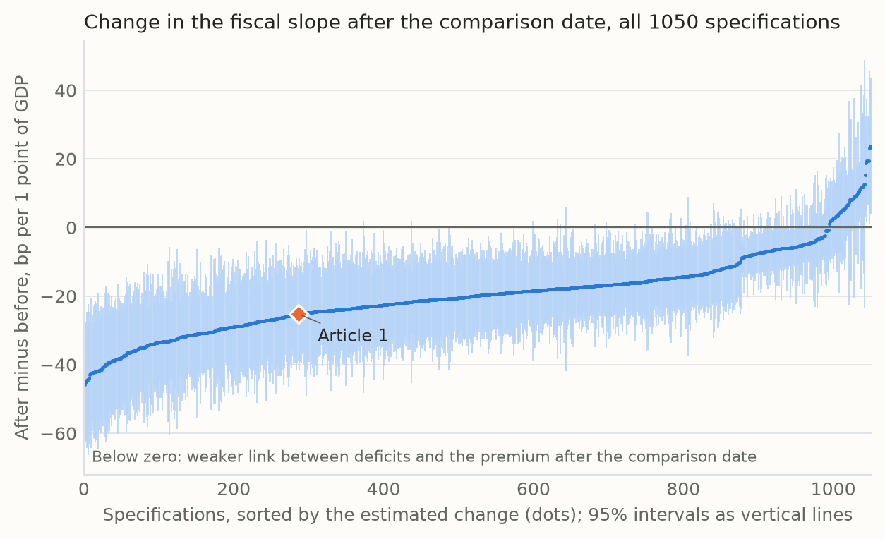
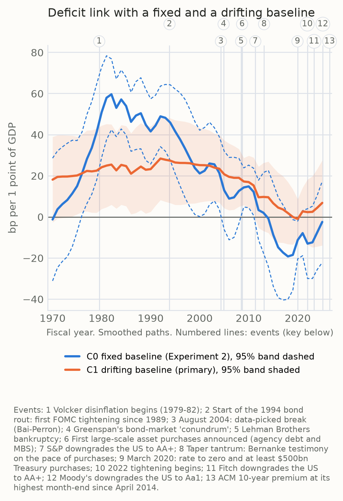

Term Premium Research Journal · Lab notes
Lab Notes: Testing the Deficit Link Four Ways
- Published
- 24 October 2026
- Observation period
- Fiscal years 1967 to 2025 (Test 1 also starts in 1980 and 1990)
- Data vintage
- Fresh pull of 22 October 2026: New York Fed ACM file, Kim-Wright, FRED and Treasury series. Revised data, not what investors saw at the time
My first article found that the bond market once charged the US for its deficits and mostly stopped after 2008. A finding like that deserves a beating. So I tried to break it four ways, writing down the rules of every test before running it.
TL;DR
- The post-2008 fade is not a fluke of one model. It shows up in 83% of 1,050 versions.
- Before 2008 the link was real, but its size is uncertain: somewhere between about 25 and 60 basis points of term premium per point of GDP of deficit, depending on choices the data cannot settle.
- Inflation, as measured, does not explain it away. The harder problem is that the premium was high in the early 1980s for reasons that had little to do with any one year's deficit.
- There is no evidence yet that the link is coming back. That is not the same as evidence that it isn't.
Every number comes from a results file: Test 1, Test 2, Test 3, Test 4.
Test 1: every version at once
Any regression is a stack of choices: which estimate of the premium, which years, which controls, which comparison date. A sceptic can always ask whether I picked the one stack that tells a good story. So I listed every reasonable choice in advance and ran all of them: 1,050 versions of the original model.
In 83% of them, the link between deficits and the premium is significantly weaker after the comparison date. The typical version shows it falling by about 20 basis points per point of GDP. The fade survives almost anything I throw at it. It is weakest when I control for inflation and the business cycle, and on the Federal Reserve Board's Kim-Wright estimate of the premium.

Test 2: the link, year by year
A before-and-after comparison hides the timing. So I let the link drift from year to year and asked one question I had fixed in advance: is it coming back? For the latest fiscal year, 2025, the estimate is −2.4 basis points, with a range of −22 to +17. To count as a return, the bottom of that range had to clear +9.3, the highest reading since 2008. It does not.
Two cautions. The bar is deliberately high, so this is no evidence of a return rather than proof of none. And the estimate uses only data up to each year but comes from today's revised figures, so it is a retrospective reading, not what an investor could have seen in real time.
Test 3: was it really inflation?
The early 1980s are where the link looks strongest, and they are also the years of double-digit inflation. Perhaps investors were simply charging for inflation risk, and deficits happened to be large at the same time. So I held inflation fixed.
It changed almost nothing. Inflation's own coefficient came out close to zero (−0.044, with a range of −0.170 to +0.082), and the 1982 link barely moved (+64 basis points against +60). Measured inflation does not explain it. That does not clear the deficit, though: if bigger deficits made investors fear inflation, holding inflation fixed would also hide part of the fiscal effect.
Test 4: the era problem
The real difficulty is credibility. In 1981 the Fed was fighting inflation, and inflation was falling: core prices rose 9.8% over the year to January 1981 and 6.5% over the year to June 1982. Yet the 10-year yield (as fitted by the New York Fed’s ACM model) rose from 12.0% in January 1981 to 14.2% in October, and the term premium from 2.9% to 4.7%. The market did not believe the Fed would see it through. Marvin Goodfriend and Robert King make this the core of the Volcker story: the disinflation was costly because it was not believed, and Volcker's committee read long-term rates as a verdict on its own credibility.
That makes the early 1980s a hard place to measure anything. The premium was high for reasons that had little to do with any single year's deficit, and a model with a fixed baseline can mistake that high water mark for a strong deficit link. So the last test lets the premium's baseline move. The 1982 link drops from about +60 to about +25 basis points per point of GDP (range +6 to +45), still clearly positive.
But the answer depends on how fast that baseline may move. Let it move freely and the fade after 1982 vanishes: +0.3 basis points, with a range of −24 to +24. Make it move slowly and about half the fade remains. Allow it a single step in 2008 and all of it survives. The free version is the least trustworthy of the three: its baseline tracks the premium almost year by year (its year-to-year moves correlate 0.90 with the premium's), so it can swallow a genuine fiscal effect along with everything else.

What I take from it
The bond market did charge for US deficits before 2008, and it charges far less now. Those two claims survived everything. What did not survive is a tidy story about when and how the change happened. The early 1980s, when the link looked strongest, were also when the Fed had the least credibility, and these data cannot pull the two apart.
The strongest competing explanation is that the premium's long fall, from credibility won back, bonds becoming a safe hedge and a world awash in savings, did most of the work, and deficits mattered less than the early numbers suggest. Test 4 leaves room for that.
What the tests cannot establish
- Cause. These are associations in a premium that is itself a model estimate, not an observed price.
- Timing. Whether the link faded gradually or broke around 2008 depends on modelling choices the data cannot settle.
- The present. The latest fiscal year in the data ends in September 2025, a year before the premium hit its highest month-end since April 2014.
Next: whatever happened to the bond vigilantes?
These results set up the next piece. It starts where the data get hardest: the early 1980s, when the Fed had to buy back its credibility with a recession. It continues through the even-keel years, when the Fed held rates steady around Treasury debt sales, and asks whether a market that once disciplined Washington could do so again.
How these were run
Each test's choices and its rule for success were committed to the research repository before any estimate existed, and each was checked by an independent review before publication here. The data are a dated pull of public series; the code is private. Benchmark for the size of the effect: Thomas Laubach (2009), who finds about 25 basis points on long-term rates per point of projected deficit, a related but different measure.
- Term premium: New York Fed, ACM term premia; Federal Reserve Board Kim-Wright via FRED.
- Fiscal and macro data: FRED and Treasury (fiscal balance, federal debt, GDP, core PCE prices, potential output).
- Further reading: Goodfriend and King, "The Incredible Volcker Disinflation"; Laubach, "New Evidence on the Interest Rate Effects of Budget Deficits and Debt"; Federal Reserve History, "The Great Inflation".
Lab notes are exploratory and labelled as such. Research and education only; nothing here is investment advice.